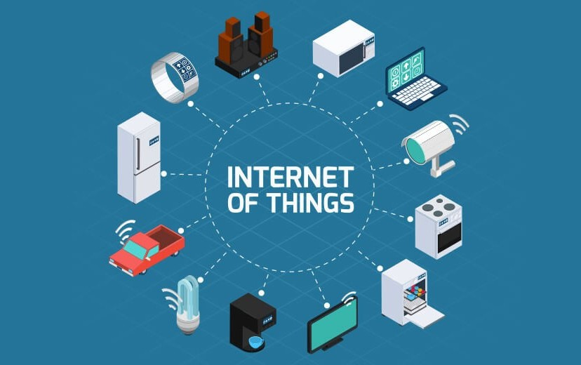

| Họ và tên |
MSSV |
STT |
| Lê Phúc Minh |
B1900351 |
1 |
Lê Văn A |
B1907651 |
2 |
Trong xu thế bắt kịp kiến thức và kỹ năng chuyên môn kỹ sư tự động hóa, cơ điện tử. IoT
là một lĩnh vực phù hợp xu thế ứng dụng Internet để kết nối các thiết bị phần cứng theo nguyên
lý không dây và tốc độ cao. Học phần này được xây dựng giúp sinh viên ngành Tự Động Hóa
và Cơ Điện Tử trải nghiệm nguyên lý, thiết kế, kết nối, lập trình, thu thập dữ liệu thông qua giao
diện web được lập trình theo khả năng của từng sinh viên qua các ứng dụng cơ bản được giới
thiệu và hướng dẫn trên lớp của giảng viên.
| Mục tiêu |
Nội dung mục tiêu |
CĐR CTĐT |
| 4.1 |
Nắm vững nguyên lý cơ bản về IoT, nguyên lý thiết kế, kết nối và truyền dữ liệu trong
các ứng dụng IoT. |
2.1.3a |
| 4.2 |
Thiết kế tốt bộ điều khiển IoT, lập trình nhúng và lập trình Web cơ
bản ứng dụng IoT. |
2.2.1a
2.2.1b |
| 4.3 |
Làm việc nhóm để giải quyết vấn đề. |
2.2.2a |